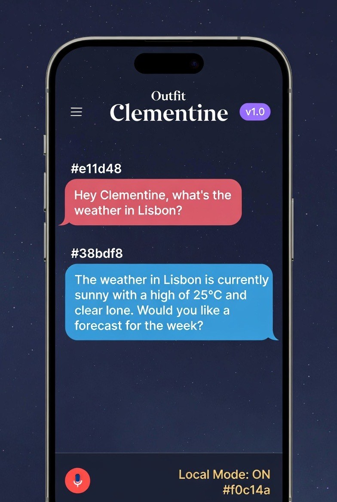
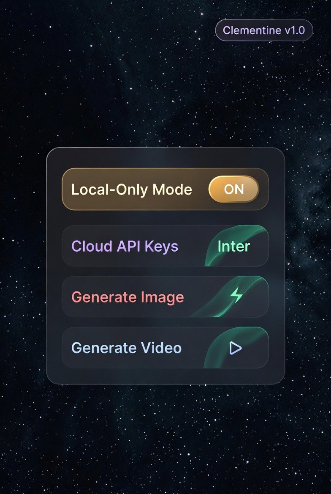
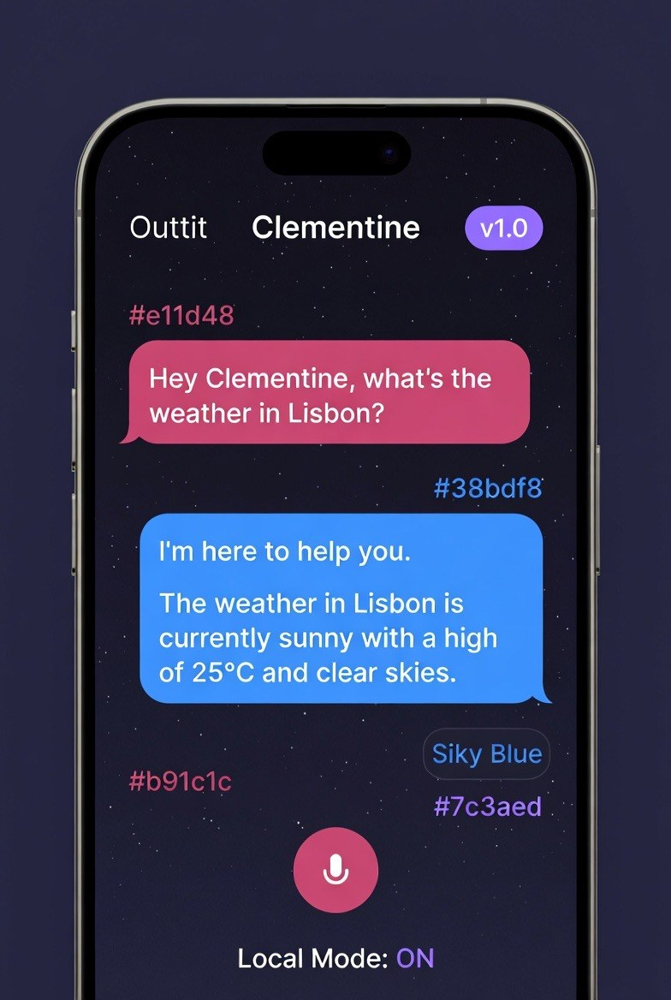
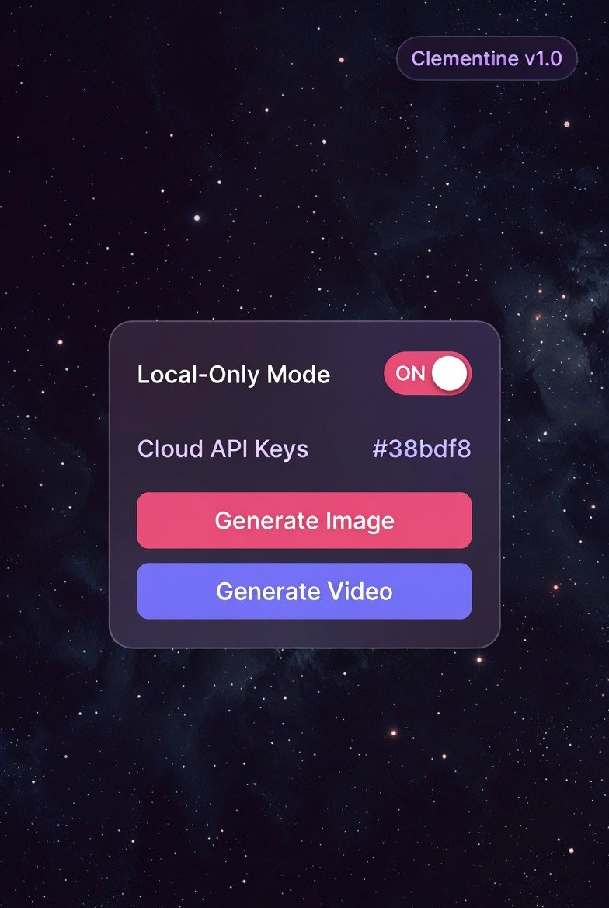
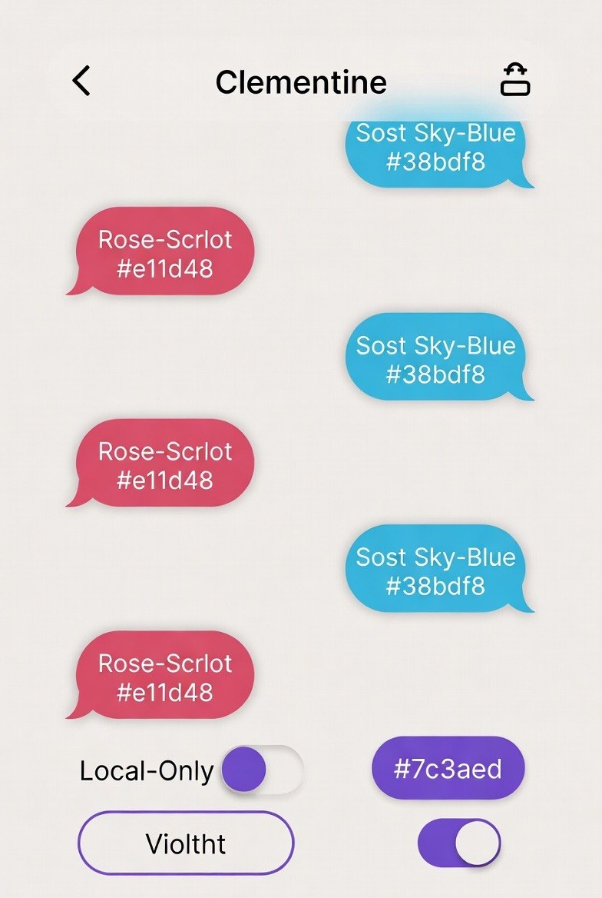
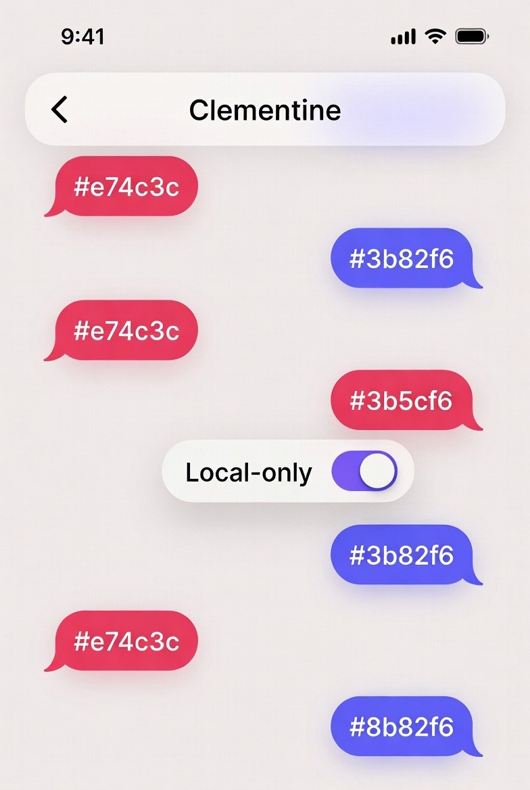
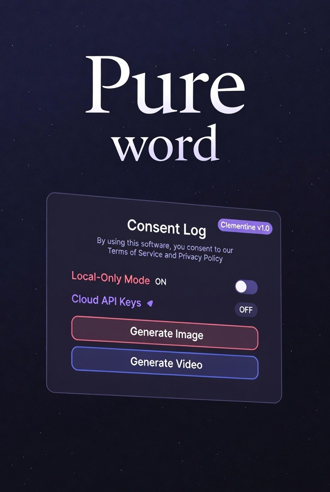
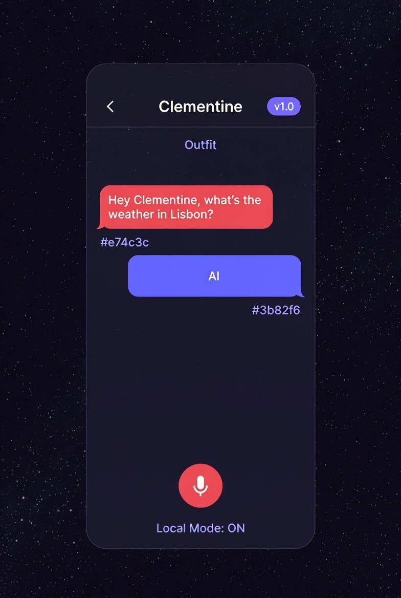

Clementine v1.0 · UI direction · 8 mockups
Eight generated mockups for the Clementine companion app. They are mood and direction, not specification — the labels are garbled, the hex codes contradict the colours they sit on, and at least one swatch is captioned with a blue value while rendering red.
Taken as a vibe they are coherent and good. Taken as a spec they will send a developer down a hole. This sheet separates the two: what to keep, what the values actually are, and what to ignore.
Two families: a light iMessage-style chat, and a dark starfield with a floating consent card. The dark direction is the stronger one and is the only family that shows the consent surface.








Consistent across every mockup regardless of the label errors. This is the part worth building from.
#e11d48The person’s own messages#38bdf8Clementine’s replies#7c3aedConsent and system chrome, version badge#f0c14aLocal-Only Mode when engaged#12101fApp background — starfield or flat#1d1a2bCards and sheetsGenerator artefacts. None of these are design decisions; all of them would be copied straight into a build by anyone treating the mockups as reference.
| On the mockup | Intended |
|---|---|
| “Sost Sky-Blue” | Soft Sky-Blue |
| “Rose-Scrlot” | Rose-Scarlet |
| “Violtht” | Violet |
| “Siky Blue” | Sky Blue |
| “Outtit” / “Outfit” | unclear — possibly Outlet, or a menu label |
| “clear lone” | clear skies |
The colour labels are worse than the
spelling. One sheet puts #3b5cf6 — a blue — on a red
bubble. Another puts #8b82f6 on a bubble rendered in the same blue as
#3b82f6 beside it. The light-chat family also uses #e74c3c and
#3b82f6, while the dark family uses #e11d48 and
#38bdf8. Those are four different colours for two roles. Pick
the dark family's pair; it has better contrast on a dark ground and the light family's blue
fails against its own bubble fill.
This is the genuinely interesting part, and it is why these are worth keeping at all. The interface is expressing real constraints from the project, not decorating them.
v1.0 sits beside the name
throughout. Small, and it does the same work as provisional and revisable does
elsewhere in this project.